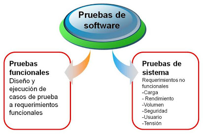

Las pruebas de software, garantizan que el producto entregado cumple con los criterios de aceptación o requerimientos del cliente o usuario de la aplicación. Para garantizar que las pruebas se realicen correctamente, se debe identificar qué tipos de pruebas se van a realizar. |
|
|
Los tipos de pruebas se dividen en: Pruebas de caja Blanca: Son las pruebas realizadas por los desarrolladores o tester avanzados, estas pruebas se enfocan en la revisión del código. pruebas de caja Negra: Son las pruebas que realizan los tester, estas pruebas se enfocan en revisar que los requerimientos funcionales se cumplan. |

|